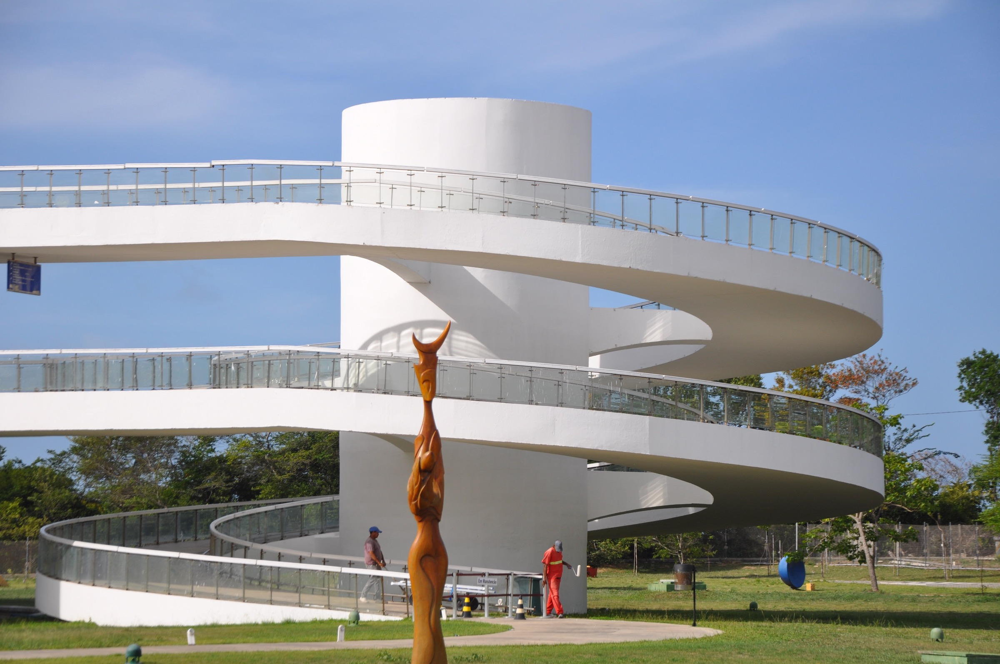

Estação Cabo Branco
A Estação Cabo Branco é um espaço dedicado á ciencia, cultura, tecnologia e arte. O local possui uma arquitetura moderna e marcante, tornando-se também um dos pontos turísticos da cidade.
Projetado pelo arquiteto Oscar Niemeyer, a Estação Cabo Branco recebe exposições, eventos e atividades culturais, sendo um importante espaço de conhecimento e lazer em João Pessoa.